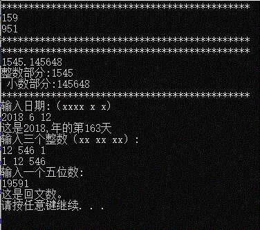

#define _CRT_SECURE_NO_WARNINGS
#include<stdio.h>
#include<stdlib.h>
void A1(); //习题1
void A2(); //习题2
void A3(); //习题3
void A4(); //习题4
void A4_b();//习题4（简化）
void AB(int *, int *);//交换两数的值；
void A5(); //习题5
//void A1();
//void A1();
int main()
{
//A1();
//A2();
//A3();
//A4_b();
A5();
system("pause");
return 0;
}
void A1()
{
char a[64];
printf("*********************************************\n");
scanf("%s", a);
if (a[3] != '\0') {
printf("输入有误！");
return;
}
printf("%c%c%c\n", a[2], a[1], a[0]);
printf("*********************************************\n");
return;
}
void A2()
{
char a[64], b[64], c[64];
b[0] = '\0';
c[0] = '\0';
int i,j;
printf("*********************************************\n");
scanf("%s", a);
for (i=0;i<64;i++){
if (a[i] == '/0') break;
if (a[i] != '.') b[i] = a[i];
else {
b[i] = '\0';
++i;
j = i;
for (; i < 64; i++) {
if (a[i] != '\0')c[i - j] = a[i];
else {
c[i - j] = '\0';
break;
}
}
break;
}
}
printf("整数部分:%s\n 小数部分:%s\n",b,c);
printf("*********************************************\n");
return;
}
void A3() {
int y, m, d;
int boolLeap;
int days=0;
printf("输入日期:（xxxx x x)\n");
scanf("%d %d %d",&y,&m,&d);
if (y % 400 == 0)boolLeap = 1; //************
else if ((y % 4 == 0 )& (y % 100 != 0))boolLeap = 1; //判断是否为闰年，Y boolLeap=1; N boolLeap=0;
else boolLeap = 0; //************
if (boolLeap) {
switch (m)
{
case 1:days = 0; break;
case 2:days = 31; break;
case 3:days = 60; break;
case 4:days = 91; break;
case 5:days = 121; break;
case 6:days = 152; break;
case 7:days = 182; break;
case 8:days = 213; break;
case 9:days = 243; break;
case 10:days = 273; break;
case 11:days = 304; break;
case 12:days = 334; break;
default:
break;
}
printf("这是%d,年的第%d天\n",y, days + d);
}
else{
switch (m){
case 1:days = 0; break;
case 2:days = 31; break;
case 3:days = 60; break;
case 4:days = 91; break;
case 5:days = 121; break;
case 6:days = 152; break;
case 7:days = 182; break;
case 8:days = 213; break;
case 9:days = 243; break;
case 10:days = 273; break;
case 11:days = 304; break;
case 12:days = 334; break;
default:
break;
}
if (m<=2) printf("这是%d,年的第%d天\n",y, days + d);
else printf("这是%d,年的第%d天\n",y,( days + d-1));
}
return;
}
void A4()
{
int x, y, z;
printf("输入三个整数（xx xx xx）:\n");
scanf("%d %d %d", &x, &y, &z);
if (x > y) {
x = x + y;
y = x - y;
x = x - y;
if (x > z) {
x = x + z;
z = x - z;
x = x - z;
if (y > z) {
y = y + z;
z = y - z;
y = y - z;
}
}
}
else if (x > z) {
x = x + z;
z = x - z;
x = x - z;
if (y > z) {
y = y + z;
z = y - z;
y = y - z;
}
}
printf("%d %d %d\n", x, y, z);
return;
}
void A4_b()
{
int x, y, z;
printf("输入三个整数（xx xx xx）:\n");
scanf("%d %d %d", &x, &y, &z);
if (x > y) {
AB(&x,&y);
if (x > z) {
AB(&x, &y);
if (y > z)AB(&z, &y);
}
}
else if (x > z) {
AB(&x, &z);
if (y > z) AB(&z, &y);
}
printf("%d %d %d\n", x, y, z);
return;
}
void AB(int *a, int *b) {
int x = *a + *b;
*a = x - *a;
*b = x - *b;
return;
}
void A5()
{
char a[6];
printf("输入一个五位数:\n");
scanf("%s", a);
if (a[0] == a[4] & a[1] == a[3]) printf("这是回文数。\n");
else printf("这不是回文数。\n");
return;
}
结果
